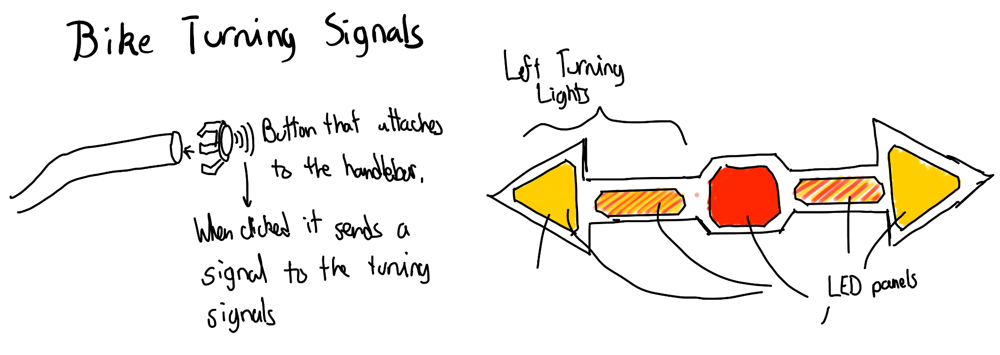

<div class="textcontainer">
<br></br>
<h3>Week 1: Final Project Proposal</h3>
<p class = "margin"></p>
Here are at 3 ideas for my final project
<p class = "margin"></p>
<h4>Idea 1 : CLEANSING GLASSES CASE</h4>
<p class = "margin"></p>
This project consists of a glasses clase that cleans your glasses with a similar mechanism to a windshield wiper.
I came up with this idea because I often find myself being to lazy to properly wipe my glasses and leave them as they are
since I do not want to damage them cleansing them with my shirt.
<br>The case will have a small motor that will move a small wiper across the glasses to clean them.
The case will also have a small reservoir of water and soap that will be sprayed onto the glasses before the wiper is activated. The case will be powered by a small battery. The case can will offer
several modes of cleansing such as a quick clean without soup, or a deep clean with soap. I would also like to experiment with the idea of using UV light to sanitize the glasses.
<p class = "margin"></p>
<h4>Idea 2: TURNING SIGNALS FOR MY BIKE</h4>

<p class = "margin"></p>
Recently I bought a bike to go around Cambridge and get to my classes at the SEC. However, I have noticed that it is somewhat
uncomfortable to have to take my hand off the handlebar to signal a turn; additionally, it is not really evident to cars, specially at night.
Consequently, I would like to develop a system that signals my turns for me with buttons at the handlebar for each diection,
sort of similar to a car.
<br></br>
As a whole, the system would consist of two buttons at the end of each handlebar. When one presses this buttons, the corresponding
light signal will turn on. Additionally, if one presses both buttons for more than 2 seconds both lights will start to blink to signal
a stop.
<p class = "margin"></p>
<h4>Idea 3: AUTOMATIC POOL BALLS RACK/h4>
<p class = "margin"></p>
Playing pool in the Smith Center is an activity I enjoy nowadays. When I was thinking about my final project, and
about something somewhat funny to do, I thought about building a robot that automatically organizes the balls for you.
<br></br>
The robot would consist of a small robotic arm with a lense that would recognize the balls by their colors or maybe
their numbers. The arm would suck the balls and then place them in the corresponidng position in the rack.
</div>